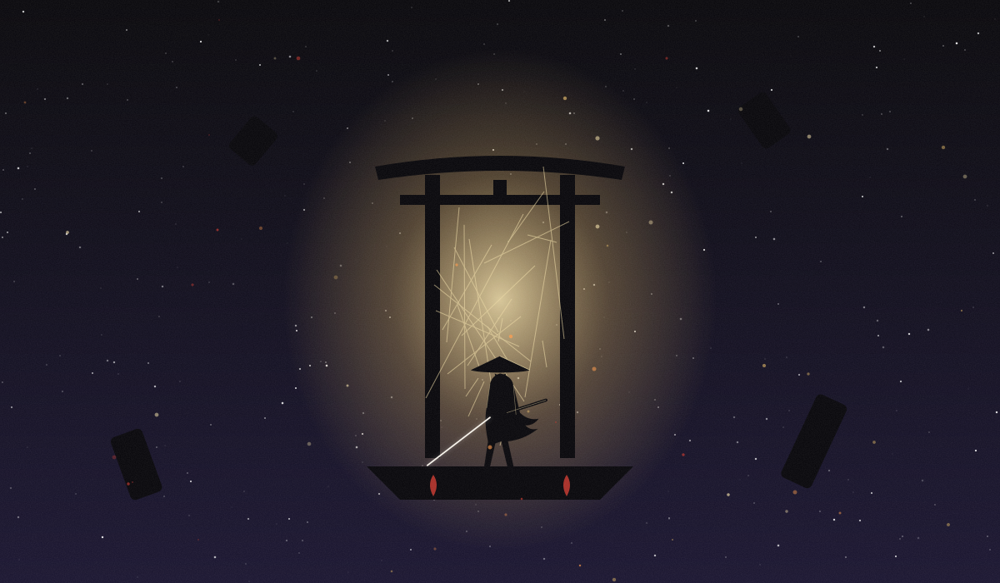

Le Soleil Noir
Une étoile éclipsée depuis trois siècles. Sa lumière n'a pas disparu : le Shogun l'a scellée.
Le jeu · Action-RPG · Science-fiction
Incarnez Kaïen, ronin ressuscité, et tranchez votre chemin à travers les Sept Shiro du Shogunat de Kurogane pour libérer la lumière du Soleil Noir.
L'univers
Il y a trois cents ans, le Shogun de Kurogane a éclipsé l'étoile de Yomi pour capturer sa lumière. Les clans qui ont refusé de s'agenouiller ont été effacés. Le clan Hoshino fut le dernier.
Aujourd'hui, un Torii de lumière s'allume au milieu d'un cimetière de vaisseaux, et un samouraï que tout le monde croyait mort ouvre les yeux. Sans maître, sans clan, sans soleil : un ronin. Il lui reste une lame, et une dette.
Un samouraï sert son seigneur. Un ronin ne sert que sa lame.
— Proverbe du clan Hoshino
Une étoile éclipsée depuis trois siècles. Sa lumière n'a pas disparu : le Shogun l'a scellée.
Sept châteaux orbitaux, sept seigneurs, sept sceaux à briser.
Le ronin que vous incarnez. Dernier du clan Hoshino, exécuté pour avoir refusé un ordre.
« Celle qui tranche les étoiles » : la lame de Kaïen, forgée dans le cœur d'une étoile morte.
Mécaniques de jeu
Un action-RPG souls-like centré sur le duel : observer, parer, punir. Puis recommencer, un peu meilleur.
Chaque combat est un échange de lecture. Attaques légères et lourdes, techniques de iaijutsu et coups chargés : votre lame répond au moindre geste.
Parez à la dernière seconde pour renvoyer la force du coup. La parade parfaite épuise la posture de l'ennemi plus vite que n'importe quelle attaque.
Dans les zones sans gravité, propulsez-vous de débris en débris. Le ronin s'oriente toujours vers son adversaire : le vide devient votre arène.
Ces portails sacrés sont vos sanctuaires. Reposez-vous pour reprendre des forces, au prix du retour des ennemis, et méditez pour progresser.
Chaque ennemi vaincu vous donne des Cendres d'étoile. Mourez, et elles restent là où vous êtes tombé : retournez les chercher, si vous l'osez.
Épargner un ennemi à genoux ou l'achever ? Vos choix d'honneur façonnent le monde, vos alliés et l'une des trois fins du jeu.
Les boss
Survolez ou sélectionnez un nom pour découvrir chaque seigneur. Vous les affronterez dans l'ordre de votre choix, sauf le dernier.
Maîtresse du Shiro-Ferraille, elle a fondu ses propres samouraïs pour en faire une armure qui ne cesse de grandir. Premier vrai mur du jeu : on apprend contre elle que la parade vaut mieux que la fuite.

Visuels
Recherches graphiques de l'équipe artistique. Le jeu est en développement : tout peut encore évoluer. Cliquez sur une image pour l'agrandir.



Fiche technique
| Studio | Flexarion (Aix-en-Provence) |
|---|---|
| Genre | Action-RPG, souls-like |
| Univers | Science-fiction, Japon féodal |
| Mode | Solo |
| Plateformes | PC (Windows), Steam Deck visé |
| Moteur | Unreal Engine 5 |
| Durée | 25 à 35 heures, trois fins |
| Langues | Français, anglais, japonais ; doublage japonais |
| Classification | PEGI 16 visé |
| Modèle | Jeu premium, environ 25 €, sans microtransaction |
Feuille de route
Validation de la parade parfaite et de la posture.
Le Shiro-Ferraille et sa Daimyō, testés en interne.
Le jeu Flexarion se dévoile.
Deux Shiro, trois Daimyō et le combat en apesanteur.
Les Shiro s'ouvrent un à un, avec la communauté.
FAQ
Flexarion est développé par le studio indépendant du même nom, une équipe de six personnes basée à Aix-en-Provence.
Oui. C'est un action-RPG exigeant : les combats demandent d'observer l'adversaire, de parer au bon moment et d'apprendre de ses morts. Des options d'accessibilité permettent d'ajuster la difficulté sans pénalité.
D'abord sur PC (Windows), avec la compatibilité Steam Deck en ligne de mire. Des versions consoles sont à l'étude pour la version 1.0.
Une démo est prévue au printemps 2027, puis un accès anticipé sur PC à la fin de l'année 2027. Les dates précises seront annoncées dans le devlog.
Comptez 25 à 35 heures pour terminer l'aventure principale, davantage pour vaincre les sept Daimyō et découvrir les trois fins.
Flexarion est développé en français. Les textes seront disponibles en français, en anglais et en japonais, avec un doublage japonais.
Chaque mois, l'équipe de Flexarion raconte les coulisses du jeu. Et les inscriptions au prochain playtest sont ouvertes.